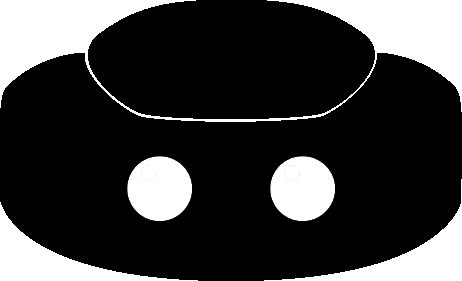

<!--
  Generated template for the RobotList page.

  See http://ionicframework.com/docs/v2/components/#navigation for more info on
  Ionic pages and navigation.
-->
<ion-header class="headerLogo">
  <ion-navbar>
    <ion-title>
      Choose a robot
    </ion-title>
  </ion-navbar>
</ion-header>

<ion-content padding>
  <div class="center" *ngFor="let obj of this.robotList">
    <ion-list>
      <ion-item-sliding>
        <ion-item (click)="checkLogin(obj.ip)">
          <ion-avatar item-left>
            
            
            
          </ion-avatar>
          <h2>{{ obj.ip }}</h2>
        </ion-item>
        <ion-item-options side="right">
          <button ion-button color="primary" (click)="deleteRobotIP(obj.ip,obj.$key)">
            <ion-icon name="delete"></ion-icon>
            Delete
        </button>
        </ion-item-options>
      </ion-item-sliding>
    </ion-list>
  </div>
  <ion-fab bottom center>


    <button ion-fab mini (click)="addRobotToList()"><ion-icon name="add"></ion-icon></button>
  </ion-fab>


</ion-content>